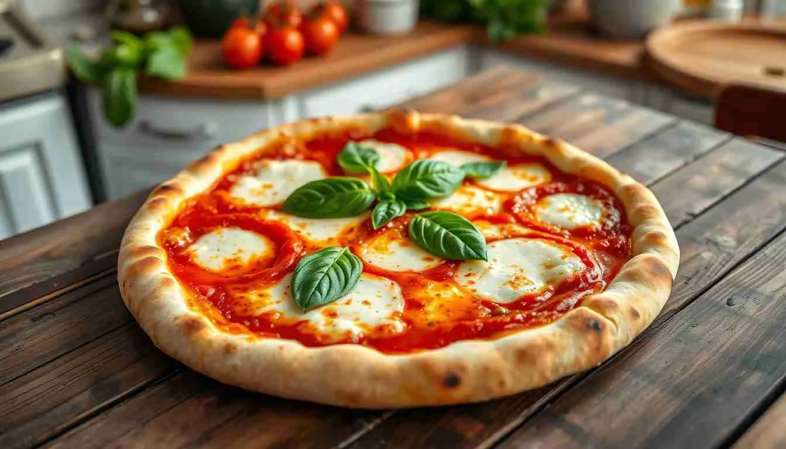

Italian Margherita Pizza
Go Back

Description
An Italian Margherita pizza is the most iconic style of Neapolitan pizza,
known for its simplicity, freshness, and balance of flavors.
It’s made with a thin, soft, and slightly chewy crust that puffs up around the
edges when baked at very high heat.
It’s celebrated as the perfect example of how a few high-quality ingredients
can create something extraordinary. The following section contains the ingredients
list for this dish.
Ingredients
For Dough:
- 2 cups (250 g) all-purpose or “00” flour
- 3/4 cup (180 ml) warm water
- 1 tsp salt
- 1/2 tsp sugar
- 1 tsp active dry yeast (or 8 g fresh yeast)
- 1 tbsp olive oil
For Topping:
- 1/2 cup (120 g) canned San Marzano tomatoes (crushed or pureed)
- 6–8 oz (170–225 g) fresh mozzarella (preferably mozzarella di bufala)
- 6–8 fresh basil leaves
- 1–2 tbsp extra virgin olive oil
- Pinch of salt
Steps
Step 1: Make the Dough
- In a small bowl, dissolve the yeast and sugar in warm water. Let it sit for about 5–10 minutes until foamy.
- In a large bowl, combine flour and salt.
- Add the yeast mixture and olive oil, then mix until a sticky dough forms.
- Knead on a floured surface for about 8–10 minutes until smooth and elastic.
- Place in a lightly oiled bowl, cover with a damp cloth, and let rise for 1–2 hours, or until doubled in size.
Step 2: Prepare The Sauce
- Crush or blend San Marzano tomatoes into a smooth puree.
- Add a pinch of salt (and optionally a drizzle of olive oil).
Step 3: Prepare the Toppings
- Slice the fresh mozzarella into thin pieces.
- Pat lightly with a paper towel to remove excess moisture (prevents soggy pizza).
- Keep fresh basil leaves whole.
Step 4: Shape the Pizza
- Preheat your oven as hot as it can go (ideally 475–500°F / 250–260°C). If you have a pizza stone, place it inside while preheating.
- Punch down the risen dough and divide into balls (1 ball = 1 pizza).
- On a floured surface, stretch or roll one ball into a thin circle (about 12 inches).
Step 5: Assemble
- Spread a thin layer of tomato sauce over the dough, leaving about 1 inch around the edge.
- Evenly distribute the mozzarella slices.
- Add a few fresh basil leaves.
- Drizzle lightly with olive oil.
Step 6: Bake
- Transfer the pizza to the hot oven (onto the stone or a baking sheet).
- Bake for 7–10 minutes (or 90 seconds if using a wood-fired oven)
- Remove from oven and let cool for 1–2 minutes before slicing.
Step 7: Serve
- Garnish with a touch more fresh basil and a drizzle of olive oil.
- Serve immediately — Italian pizza is best eaten hot and fresh!